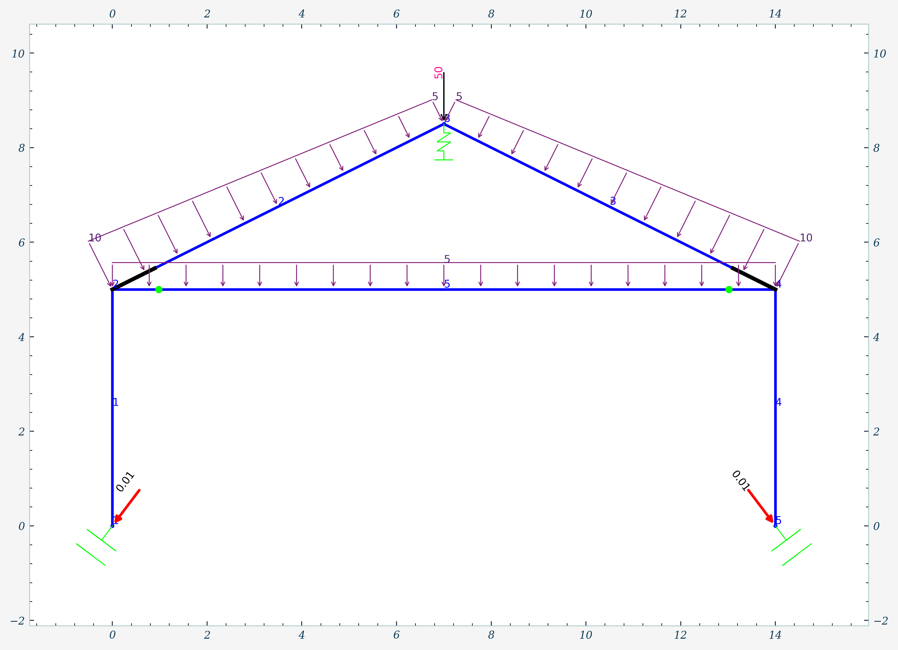
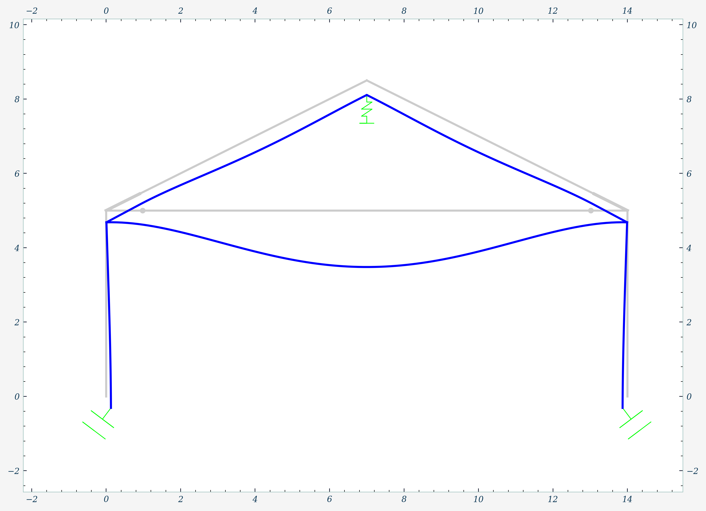
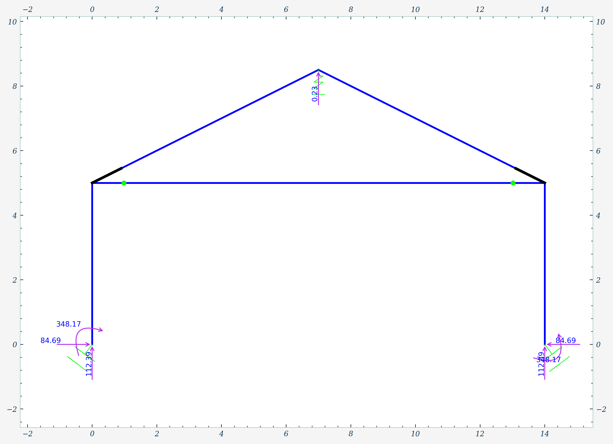
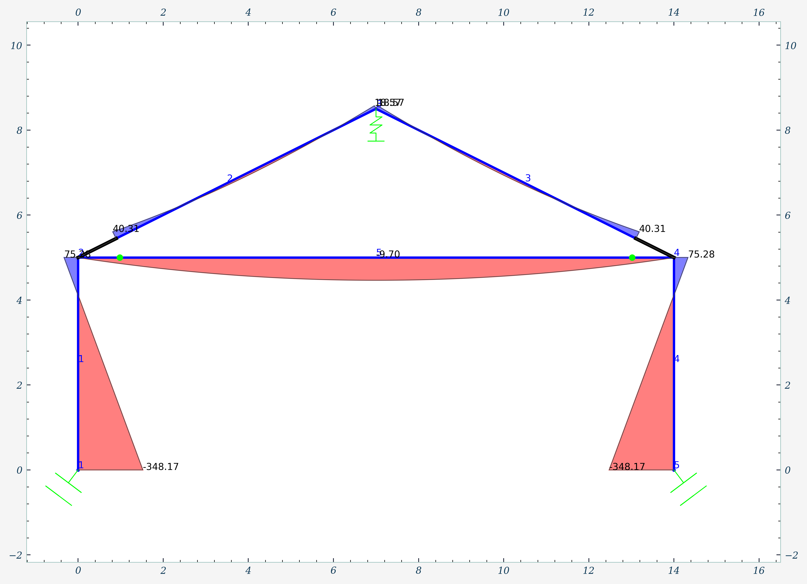
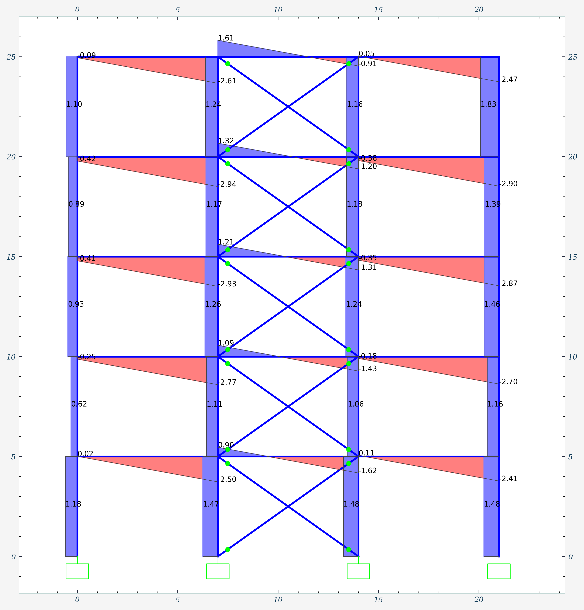
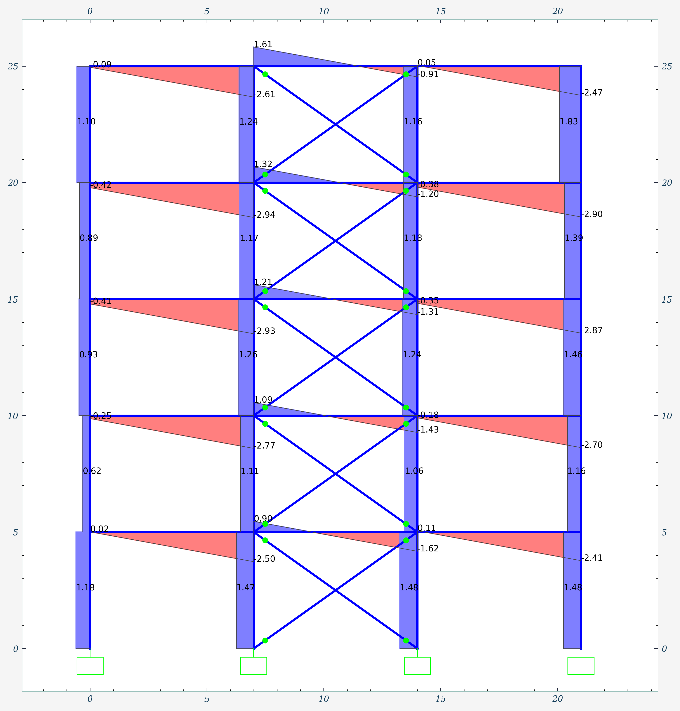
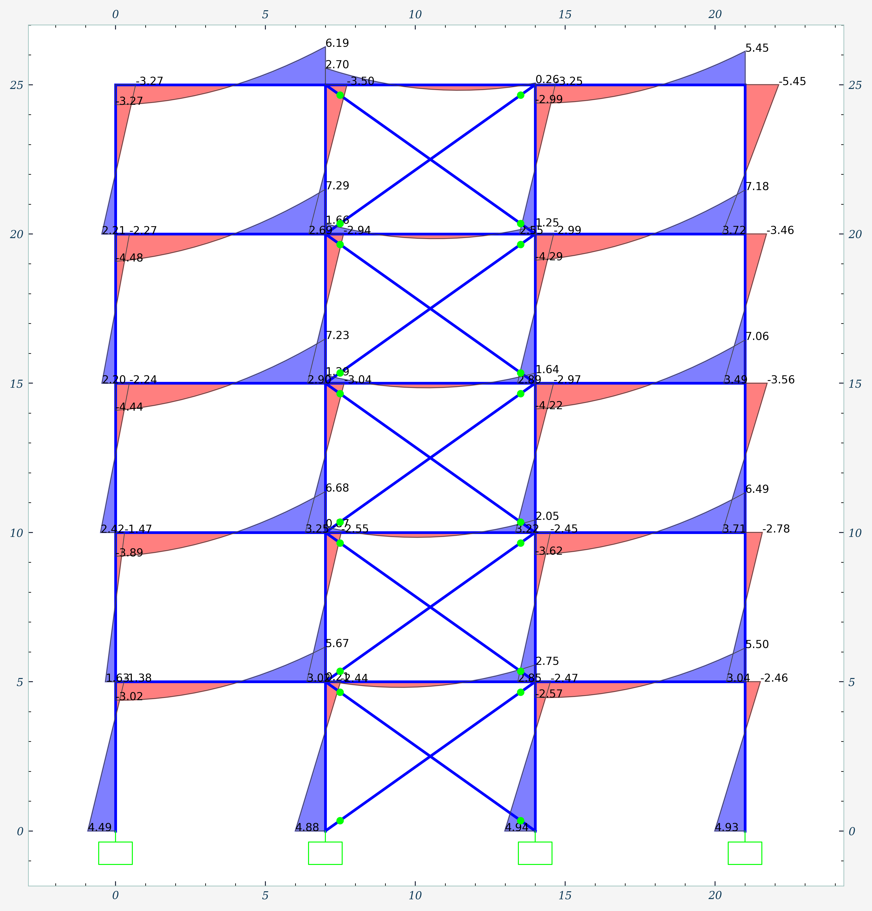
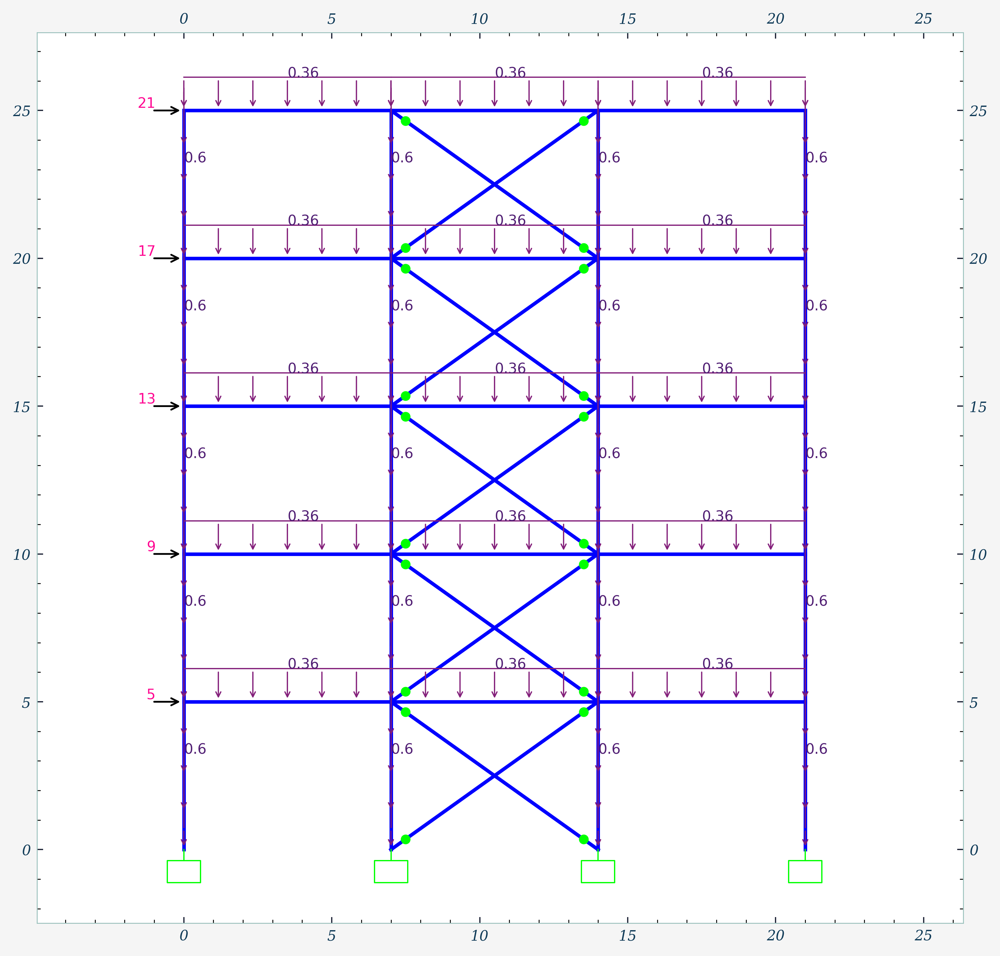
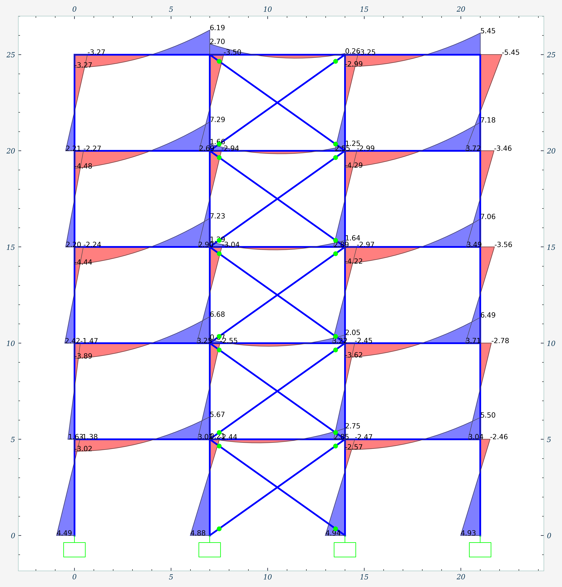
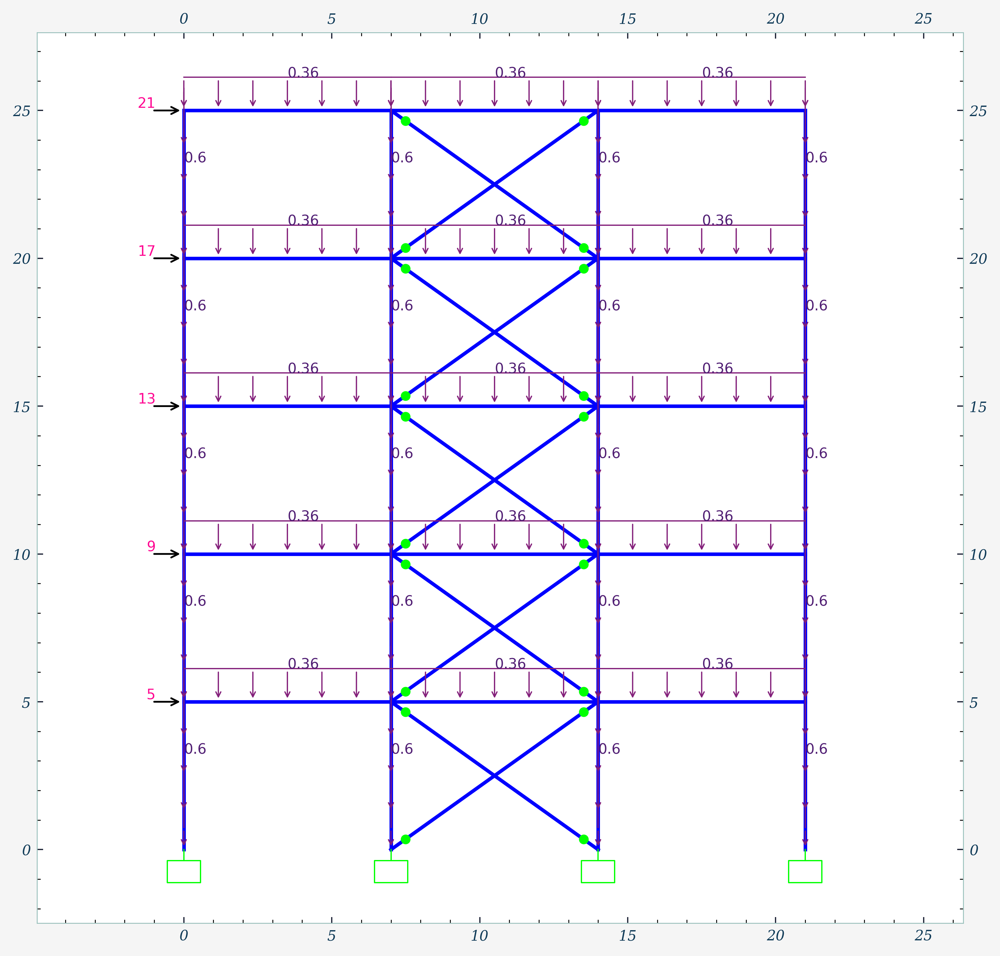

milcapy
Biblioteca para el análisis estructural de marcos en 2D
Biblioteca para el análisis estructural de marcos en 2D, con soporte para elementos:
- CST (Constant Strain Triangle)
- Q4 (Quadrilateral 4 nodos & 2dof por nodo)
- Q6 (Quadrilateral 4 nodos & 3dof por nodo)
- Q6i (Rectangular 4 nodos & 2dof por nodo + modos incompatibles)
- Q8 (Quadrilateral 8 nodos & 2dof por nodo)
Implementa el método de rigidez directa y el método de los elementos finitos para membranas, con solución cerrada en elementos unidimensionales (1D: marcos y armaduras).
Características principales
Materiales
Definición de materiales con propiedades elásticas
Secciones
Rectangulares, circulares, genéricas y tipo cáscara
Elementos
Vigas, armaduras y membranas con diversas formulaciones
Cargas
Nodales, distribuidas y peso propio
Condiciones de frontera
Restricciones y apoyos elásticos
Visualización
Interfaz interactiva para el modelo
Estudio de convergencia
Una viga en voladizo de 2m de longitud, sección rectangular de 0.6m de altura y 0.4m de base, materiales con E=2e6 y v=0.2 y una fuerza aplicada en el extremo libre de -20tonf.
Instalación
pip install milcapyComandos de importación
from milcapy import (
SystemModel,
model_viewer,
BeamTheoriesType,
CoordinateSystemType,
DirectionType,
StateType,
LoadType,
FieldType,
ConstitutiveModelType,
IntegrationType,
)Comandos
1. Comandos de modelo
model = SystemModel()2. Comando de material
model.add_material('name', 'modulus_elasticity', 'poisson_ratio', 'specific_weight=0')Parámetros:
name(str) → Nombre del materialmodulus_elasticity(float) → Módulo de elasticidadpoisson_ratio(float) → Coeficiente de Poissonspecific_weight(float) → Peso específico (opcional)
3. Comando de sección
3.1. Sección rectangular
model.add_rectangular_section('name', 'material_name', 'base', 'height')3.2. Sección circular
model.add_circular_section('name', 'material_name', 'diameter')3.3. Sección genérica
model.add_generic_section('name', 'material_name', 'area', 'inertia', 'k_factor')3.4. Sección de cáscaras
model.add_shell_section('name', 'material_name', 'thickness')4. Comando de nodo
model.add_node('id', 'x', 'y')5. Comando de elemento marco
5.1. Marco con teorías de viga
model.add_member('id', 'node_i_id', 'node_j_id', 'section_name', 'beam_theory=BeamTheoriesType.TIMOSHENKO')5.2. Viga de Timoshenko
model.add_elastic_timoshenko_beam('id', 'node_i_id', 'node_j_id', 'section_name')5.3. Viga de Euler-Bernoulli
model.add_elastic_euler_bernoulli_beam('id', 'node_i_id', 'node_j_id', 'section_name')6. Comando de elemento de armadura
model.add_truss('id', 'node_i_id', 'node_j_id', 'section_name')7. Comando de elemento de membrana
7.1. Elemento CST
model.add_cst('id', 'node_ids', 'section_name', 'state=ConstitutiveModel.PLANE_STRESS')7.2. Elemento Q4
model.add_membrane_q4('id', '*node_ids', 'section_name', 'state=ConstitutiveModel.PLANE_STRESS')7.3. Elemento Q6
model.add_membrane_q6('id', '*node_ids', 'section_name', 'state=ConstitutiveModel.PLANE_STRESS')7.4. Elemento Q6I
model.add_membrane_q6i('id', '*node_ids', 'section_name', 'state=ConstitutiveModel.PLANE_STRESS')7.5. Elemento Q8
model.add_membrane_q8('id', '*node_ids', 'section_name', 'state=ConstitutiveModel.PLANE_STRESS', 'integration=IntegrationType.COMPLETE')8. Comando de patrón de carga
model.add_load_pattern('name', 'self_weight_multiplier=0', 'state=StateType.ACTIVE')9. Comandos de asignación
9.1. Modificador de propiedades
model.set_property_modifiers('section_name', 'axial_area=1', 'shear_area=1', 'moment_inertia=1', 'weight=1')9.2. Condiciones de frontera
9.2.1. Restricciones
model.add_restraint('node_id', 'ux', 'uy', 'rz')9.2.2. Apoyos elásticos
model.add_elastic_support('node_id', 'kx=None', 'ky=None', 'krz=None', 'CSys=CoordinateSystemType.GLOBAL')9.2.3. Eje local
model.add_local_axis_for_node('node_id', 'angle')9.3. Cargas
9.3.1. Cargas puntuales
model.add_point_load('node_id', 'load_pattern_name', 'fx=0', 'fy=0', 'mz=0', 'CSys=CoordinateSystemType.GLOBAL', 'replace=False')9.3.2. Desplazamientos prescritos
model.add_prescribed_dof('node_id', 'load_pattern_name', 'ux=None', 'uy=None', 'rz=None', 'CSys=CoordinateSystemType.GLOBAL')9.3.3. Cargas distribuidas
model.add_distributed_load('member_id', 'load_pattern_name', 'load_start=0', 'load_end=0', 'CSys=CoordinateSystemType.GLOBAL', 'direction=DirectionType.LOCAL_2', 'load_type=LoadType.FORCE', 'replace=False')9.3.4. Peso propio
model.add_self_weight('load_pattern_name', 'factor=1')9.4. Desfase de extremos (brazos rígidos)
model.add_end_length_offset('member_id', 'la=0', 'lb=0', 'qla=True', 'qlb=True', 'fla=1', 'flb=1')9.5. Liberaciones
model.add_releases('member_id', 'pi=False', 'vi=False', 'mi=False', 'pj=False', 'vj=False', 'mj=False')10. Comandos de análisis
model.solve(load_pattern_name=None)11. Comandos de postprocesamiento
11.1. Matriz de rigidez global
matrix: NDArray = model.get_global_stiffness_matrix()11.2. Vector de fuerzas global
vector: NDArray = model.get_global_load_vector('load_pattern_name')11.3. Visualización
model.show()Este comando abre una ventana interactiva para visualizar el modelo.
12. Comando de resultados
results: Results = model.get_results('load_pattern_name')12.1. Resultados a nivel de modelo
displacements: np.ndarray = results.get_model_displacements()
reactions: np.ndarray = results.get_model_reactions()12.2. Resultados a nivel de nodos
displacements: np.ndarray = results.get_node_displacements(node_id)
reactions: np.ndarray = results.get_node_reactions(node_id)12.3. Resultados a nivel de miembros
displacements: np.ndarray = results.get_member_displacements(member_id)
internal_forces: np.ndarray = results.get_member_internal_forces(member_id)
axial_force: np.ndarray = results.get_member_axial_force(member_id)
shear_force: np.ndarray = results.get_member_shear_force(member_id)
bending_moment: np.ndarray = results.get_member_bending_moment(member_id)Ejemplo de uso
from milcapy import SystemModel, BeamTheoriesType, model_viewer
model = SystemModel()
model.add_material(name="concreto", modulus_elasticity=2.1e6, poisson_ratio=0.2)
model.add_rectangular_section(name="vigas", material_name="concreto", base=0.3, height=0.5)
model.add_rectangular_section(name="muros", material_name="concreto", base=0.3, height=2.0)
model.add_node(1, 0, 0)
model.add_node(2, 0, 5)
model.add_node(3, 7, 8.5)
model.add_node(4, 14, 5)
model.add_node(5, 14, 0)
model.add_member(1, 1, 2, "muros", BeamTheoriesType.TIMOSHENKO)
model.add_member(2, 2, 3, "vigas", BeamTheoriesType.EULER_BERNOULLI)
model.add_member(3, 3, 4, "vigas", BeamTheoriesType.EULER_BERNOULLI)
model.add_member(4, 4, 5, "muros", BeamTheoriesType.TIMOSHENKO)
model.add_member(5, 2, 4, "vigas", BeamTheoriesType.EULER_BERNOULLI)
model.add_restraint(1, (False, True, True))
model.add_restraint(5, (False, True, True))
model.add_load_pattern("Live Load")
model.add_point_load(3, "Live Load", 0, -50, 0)
model.add_distributed_load(2, "Live Load", -10, -5)
model.solve()
model_viewer(model)Modelo
Deformada
Reacciones
Diagramas de momentos
Galería

 

 


